🎮 HIHello's 网站
常用的教程，带有图文，方便使用
📖 指南 · 点击模块展开，再点条目查看图片
🎮 备用指南 · 当前游戏教程
▾
🔄 暂无
▾
步骤1： 1
步骤2： 2
🟦 Steam 相关
▾
🚫 Steam 禁止更新 CFG 添加方法
▾
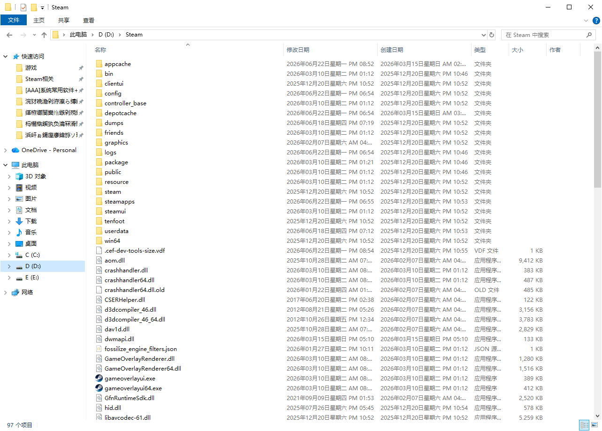
步骤1： 找到你的steam根目录,如图所示
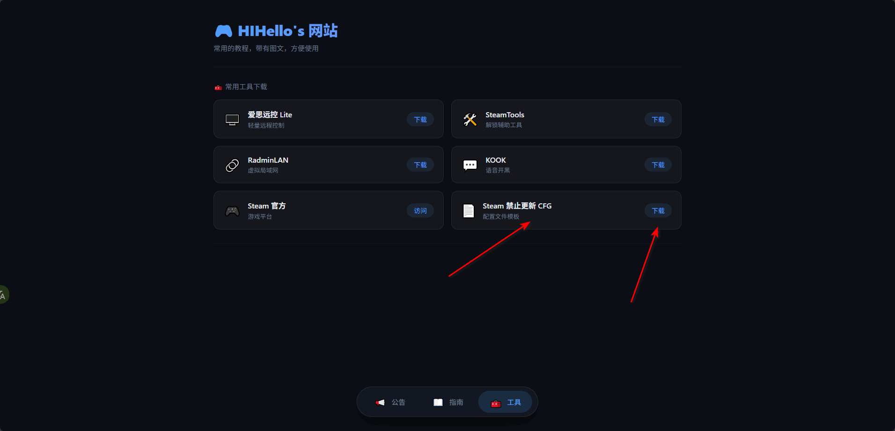
步骤2： 下载工具栏里面的"Steam 禁止更新 CFG"。
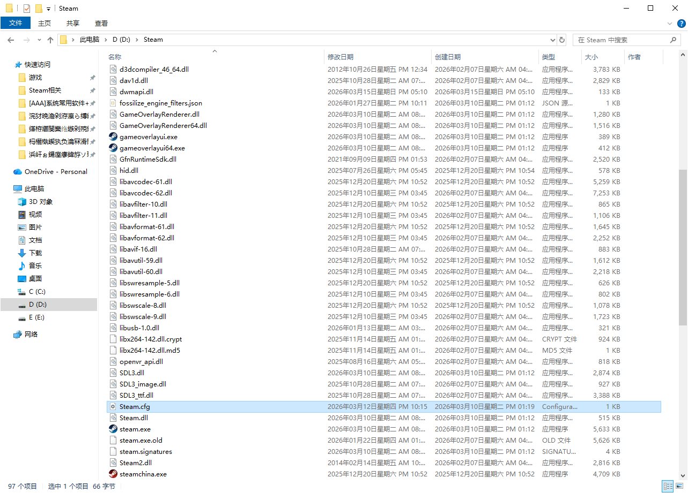
步骤3： 将下载下来的cfg放入steam根目录。重启即可
🔍 Steam 版本查看
▾
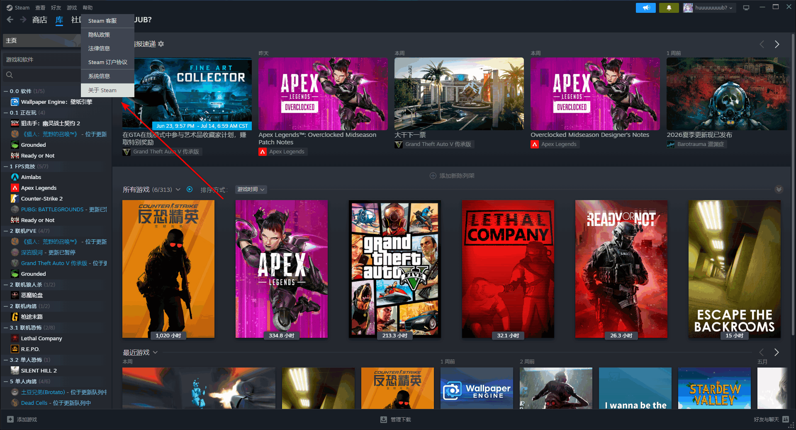
点击左上角“Steam” → “关于 Steam” 即可看到版本号。
也可在控制台输入 version 命令。
🧹 Steam 清除下载缓存
▾
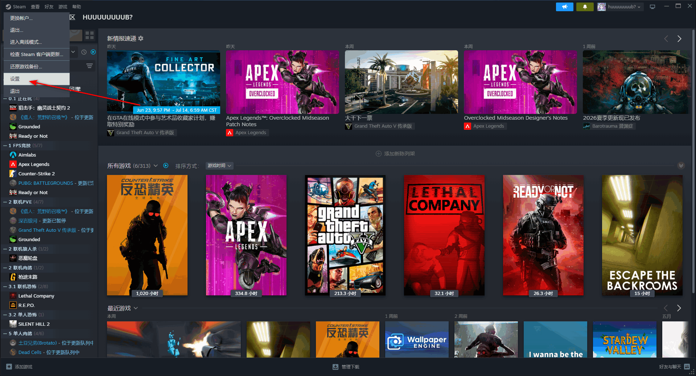
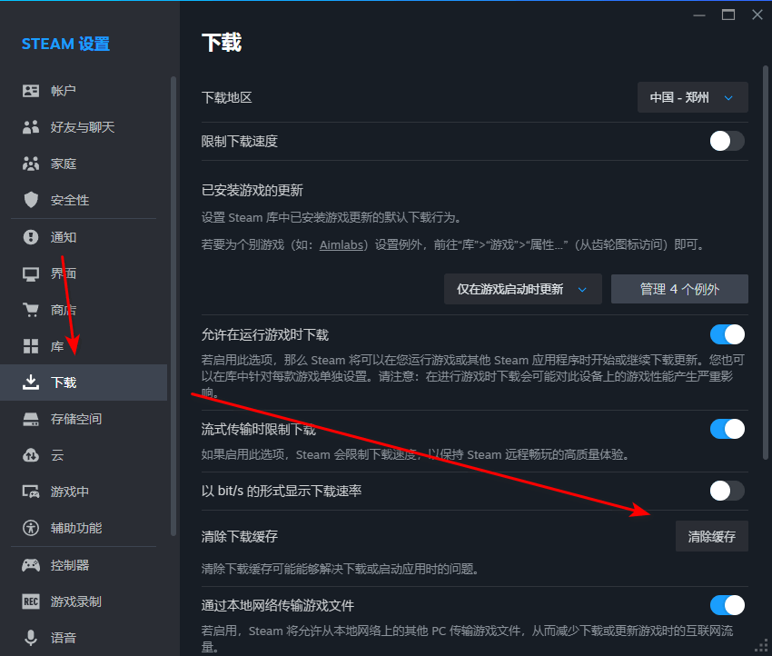
打开Steam设置 → 下载 → 点击“清除下载缓存” → 重启Steam。
🔁 不会删除游戏文件，只清理临时数据。
🛠️ SteamTools 相关
▾
📦 SteamTools 使用方法(暂无)
▾
🖥️ 电脑远控相关
▾
📡 爱思远控使用方法
▾
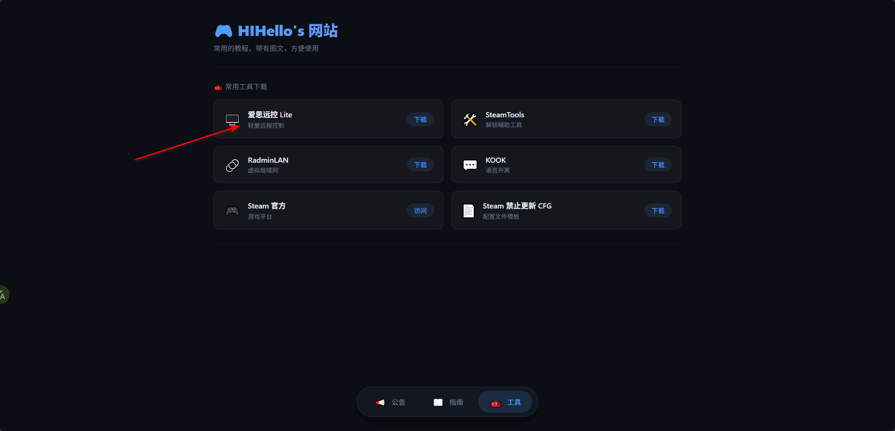
步骤1： 下载安装爱思远控
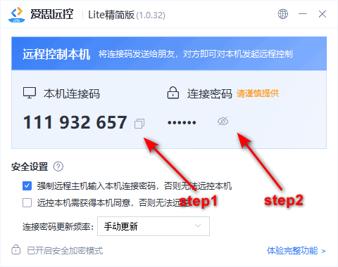
步骤2： 将远控码和密码复制发给远控你的人,注意密码不会自动复制
⚠️ 请发送给你信任的人！
🌐 虚拟局域网相关
▾
🔗 RadminLAN 使用方法
▾
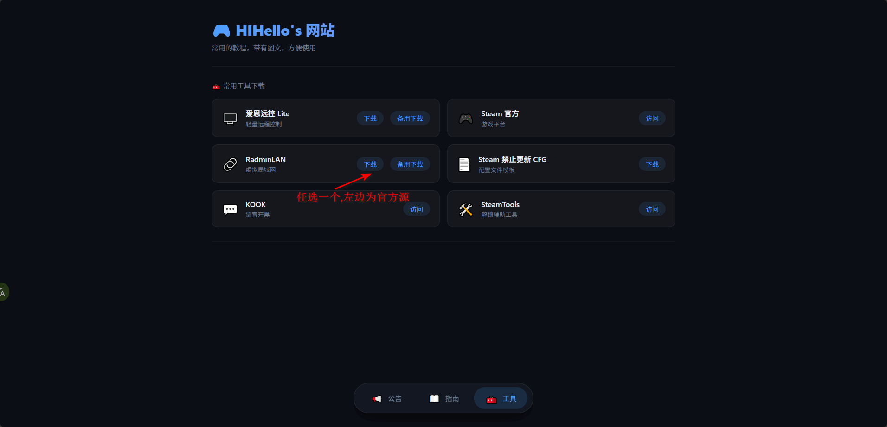
步骤1： 下载并安装radmin
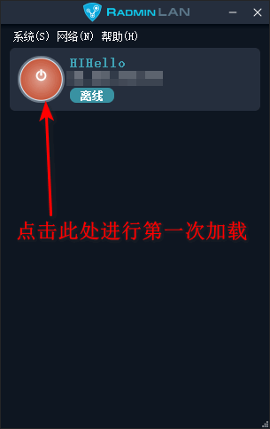
步骤2： 第一次加载
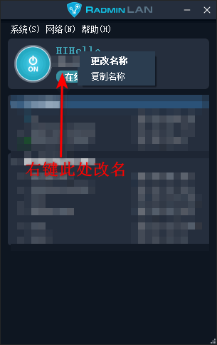
步骤3： 修改名字
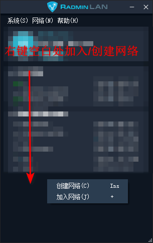
步骤4： 加入/创建局域网
🧰 常用工具下载
📢 公告 · 置顶内容会显示在最前面
基础信息
RadminLAN 网络： 名称：暂无 ｜ 密码：暂无
KOOK 频道： 暂无
永久置顶
⚠️ Steam 更新提醒
如果你想用steamtools,请禁用steam自动更新，请参考「Steam 禁止更新 CFG 添加方法」。
2026-06-20
示例标题
示例内容
示例日期